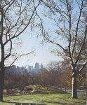

呂清夫 撰文

台北七號公園應否設置體育場？愚意以為，此事應該多聽環保人士的意見，因為打開公園的發展史來看，即知公園的成立原是基於環保的理想而來。在專制時代，不論中西，大致無所謂公園，有的只是「私園」，那是帝王貴冑為著一己的享樂而設的。等到進入民主時代以後，這些「御花園」才開放給民眾，如倫敦西區的海德公園（一四二公頃）屬之。西方真正公園的開設乃是十九世紀中葉的事情，至於它的發源地，仍在工業革命的老家、首見污染的英國，而且是經過一番抗爭才得到結果的。由於工業革命的緣故，英國在十九世紀前半，都市人口大增，曼徹斯特一地在四○年間，人口便增加十倍，其他倫敦、伯明罕更不在話下。於是房地產暴漲，鄉下來的人只好住進屋頂樓或地下室，有時一個房間，甚至一個房間的一個角落即住了一家人，倫敦有一間房子居然住了六十三人。它的位置自然是在倫敦的東區。這個東區和西區在倫敦是兩個世界，西區（West End）住的是資本家，故處處朱門，海德公園就在西區之內。東區住的是勞動者，是貧民區，不僅沒有公園，而且上下水道臭氣薰天，工廠廢水黑煙咄咄逼人，墳場更與活人爭地，環境惡化莫此為甚，瘧疾傷寒蔚為溫床，因之，東區居民的平均壽命只有西區的一半，這正是狄更斯那種寫實小說的絕佳背景，也正是大眾公園必然的發原地。因為大眾在這個快要窒息的城市之中，無論如何需要一個都市之肺——公園。於是一八四○年乃發生了群眾強烈請願設立公園的事，他們要求政府在東區新設公園，以便改善環境品質，他們表示沒有能耐為著呼吸新鮮空氣，老遠跑去海德公園。當時聯名請願的人數竟多達三萬人之譜，弄得議會之中也不得不以公園為重要議題，由是乃催生了倫敦東區的維多利亞公園土（七七‧七公頃），並於一八四五年開放，當時雖然尚未整理完備，但是由於久旱而逢甘霖，每天的入園者竟超過了兩萬人。談到這段歷史，研究森林美學的日本學者便指出，當時倫敦的情況很像一九六○年代的日本，因為這個年代裏，日本人拚命賺錢的結果，使他們登上了經濟大國，但是在掙錢的過程中，也使社會付出了慘痛的代價，一批批公害疾病統統出籠，如水候病、痛痛病、四日市氣喘相繼發生。同時空氣可疑、青山變色、綠水發臭，弄得大家不敢再以社會成本換取經濟效益，改以社會成長取代經濟成長，因之，大家爭取的是社會福祉，看重的是公園綠地。為此，東京的公園預算乃從一九六八年起急劇上升，至一九七二年，建設省遂決定投資九千億日圓在都市公園的整頓上面，可知氣魄非凡。不僅如此，一九七一年東京都知事（相當於市長）的選舉，更以都市環境的改善為主要的競選訴求，各候選人莫不提出他們的環保計畫。這使人不由得想起了一八九一年紐約市長的選舉，競選當時亦曾碰到公園設立的問題，結果是強烈主張設立公園的候選人切合了輿論，獲得了當選，這才有了今天紐約的中央公園（見上圖），才有了今天水泥叢林中的一片淨土，而環繞於這片淨土四周的是古今漢美術館、大都會美術館、市立美術館、自然科學博物館、市立博物館……然而就是沒有體育館。今天台北的公園之中是否要設體育館，好像有人說過，最好的辦法是讓市長民選，看看主張設立體育場的候選人到底能夠得到多少選票。但不管怎樣，光復四十年來，台北增建的公園實在太少，原有的植物園又變得越來越小，新建的公園如劍潭、雙溪諸園更小裏小氣，一個朋友曾經憤慨地說，那種小公園哪叫公園，簡直是安全島嘛。然而，像永和地區，則連「安全島」都沒了。至於較大的公園像新生公園又遠在天邊，人跡罕至，知者甚少，去一趟少說也要花去半天的工夫，誰有能耐？反觀國外設立公園的原則卻是「人口越多則公園越多，反之則越少」今天我們則反其道而行，不知民意基礎何在？再看看陽明山公園，民眾擠了半天，公車下車以後，還要走得腰痠背痛才能到達目的地，倒是有車階級可以在旁呼嘯雨過，直到終點，這種設計是否叫民眾到山區去也要吸收汽車的廢氣，或者是鼓勵大家都買轎車去阻塞交通？看到這種現象，我們知道七號公園的問題絕非一日之寒，環保人士真是任重道遠。
原載1989.4.28.自立早報，收入1994呂清夫著「現代都市叢林派」